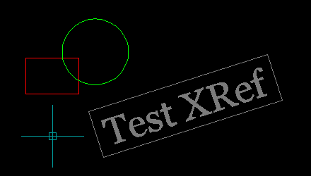

Copy to XRef
This page is delivered for consistency purposes only, as part of the LeeMac sample module of DynALisp, which shows how DynALisp turns existing AutoLISP programs into a module. The program and its description are the work of Lee Mac, who keeps all the credit for them. The original page, with the latest version, is on Lee Mac's website: https://lee-mac.com/copytoxref.html
| Function Syntax | LM-CopyToXref – original syntax: C2X (see aliases) |
| Current Version | 1.2 |
| Compatible with AutoCAD for Mac? | No |
| Compatible with AutoCAD LT? | No |
| Original Page | lee-mac.com/copytoxref.html |
Program Description
This program enables the user to copy a selection of objects to a selected xref, without opening the xref source drawing.
Upon calling the program with c2x at the command-line, the user is prompted to make a selection of objects to copy. Following a valid response, the user is then prompted to select an External Reference (xref) to which the objects are to be copied.
The program will then proceed to copy the selected objects to the source drawing of the selected xref using a deep-clone method, coupled with an ObjectDBX interface should the xref source drawing be unopened in the current drawing session.
Upon copying the selection, the xref source drawing is saved and the xref is reloaded in the current drawing; the selected objects are then deleted from the current drawing.
The program will account for the position, scale, rotation & orientation of the xref relative to the selection of objects and will perform successfully under all UCS & View settings.
Please Note: the act of copying objects to the xref source drawing involves saving the external drawing remotely - this action cannot be undone within the current drawing and changes to the external drawing must be reset manually.
Note also that when saving drawings through ObjectDBX, drawing file thumbnails will be lost until the next manual save.
Demonstration

Bundled program notes
;;-------------------------=={ Copy to XRef }==-------------------------;;
;; ;;
;; This program enables the user to copy a selection of objects to a ;;
;; selected xref, without opening the xref source drawing. ;;
;; ;;
;; Upon calling the program with 'c2x' at the command-line, the user ;;
;; is prompted to make a selection of objects to copy. Following a ;;
;; valid response, the user is then prompted to select an External ;;
;; Reference (xref) to which the objects are to be copied. ;;
;; ;;
;; The program will then proceed to copy the selected objects to the ;;
;; source drawing of the selected xref using a deep-clone method, ;;
;; coupled with an ObjectDBX interface should the xref source drawing ;;
;; be unopened in the current drawing session. ;;
;; ;;
;; Upon copying the selection, the xref source drawing is saved and ;;
;; the xref is reloaded in the current drawing; the selected objects ;;
;; are then deleted from the current drawing. ;;
;; ;;
;; The program will account for the position, scale, rotation & ;;
;; orientation of the xref relative to the selection of objects and ;;
;; will perform successfully under all UCS & View settings. ;;
;; ;;
;; Please Note: ;;
;; ------------------------------ ;;
;; The act of copying objects to the xref source drawing involves ;;
;; saving the external drawing remotely - this action cannot be ;;
;; undone within the current drawing and changes to the external ;;
;; drawing must be reset manually. ;;
;; ;;
;; Note that when saving drawings through ObjectDBX, drawing file ;;
;; thumbnails will be lost until the next manual save. ;;
;;----------------------------------------------------------------------;;
;; Author: Lee Mac, Copyright © 2014 - www.lee-mac.com ;;
;;----------------------------------------------------------------------;;
;; Version 1.2 - 2014-06-21 ;;
;;----------------------------------------------------------------------;;
Command Names And Aliases
As in every DynALisp module, each program of this sample module has one main command, named LM-*, and the original command names of Lee Mac's page are kept as its aliases: they run the same command, and can be added, renamed or removed in Dyl-Suite (saved in Resources\Aliases.csv).
| Command | Aliases | Name |
|---|---|---|
| LM-CopyToXref | C2X | Copy To Xref |